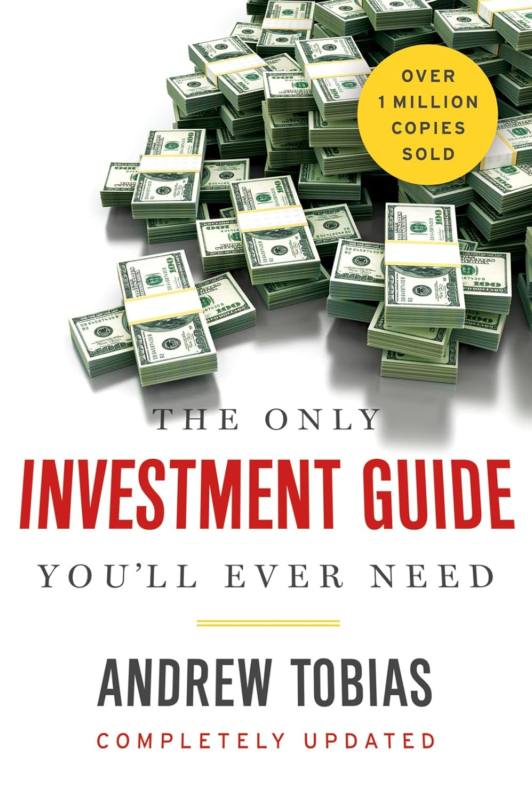

安德鲁·托比亚斯（Andrew Tobias）1947年出生，1968年毕业于哈佛大学斯拉夫语言文学专业，1972年获得哈佛商学院工商管理硕士学位。在哈佛就读期间，他实际上将大量精力投入运营一家年营收百万美元的学生企业集团，并编辑出版了旅行指南《Let's Go》。毕业后他成为《纽约》杂志的专职撰稿人，随后陆续出版了十二本书，其中三本登上《纽约时报》畅销榜——关于露华浓创始人查尔斯·雷夫森的传记《Fire and Ice》、揭示保险业内幕的《The Invisible Bankers》，以及这本1978年首次出版的《The Only Investment Guide You'll Ever Need》。在个人电脑的早期岁月，他还开发了"Managing Your Money"个人理财软件，帮助数十万用户管理财务。1999年至2017年间，他担任美国民主党全国委员会司库。
《The Only Investment Guide You'll Ever Need》自1978年出版以来已售出逾一百万册，历经多次修订，最新版本于2022年由Mariner Books出版，增补了加密货币、NFT、新冠疫情后经济以及气候变化对投资影响等当代议题。这本书的核心理念极为朴素：花得比赚得少，还清信用卡债务，将省下的钱投入低成本的指数基金，然后让时间和复利替你工作。托比亚斯以诙谐幽默的笔调，将储蓄、预算、保险、税务、退休规划、股票与债券等看似枯燥的话题写得引人入胜。他告诉读者，还清年利率18%至20%的信用卡债务，是世界上最简单、最安全、回报最确定的"投资"；他用"新车气味是世界上最昂贵的香水"来劝诫人们三思而后行；他也坦率地告诉普通投资者，对大多数人来说，低成本的广基指数基金才是真正明智的选择——尽管选股的游戏诱惑力十足。
这本书在业界和公众中获得了广泛认可。达拉斯独行侠队老板、亿万富翁马克·库班（Mark Cuban）2007年在《美国新闻与世界报道》（US News）上表示："This is the only investment book I have read that truly made sense."（"这是我读过的唯一一本真正有道理的投资书。"）库班曾透露，他的个人理财路线图主要由两本书构成——托比亚斯的这一本和保罗·特霍斯特（Paul Terhorst）的《Cashing In on the American Dream》——正是这两本书帮助他确立了35岁前退休的目标（事实上他30岁便已实现）。《纽约时报》评价此书"充满了如此之多的窍门和视角，只有傻瓜或亿万富翁才不会从中受益"（"So full of tips and angles that only a booby or a billionaire could not benefit."）。
对于关注个人理财和投资入门的读者而言，《The Only Investment Guide You'll Ever Need》的持久价值在于它始终坚持一个反直觉的真相：在投资中，行为比智商重要，节俭比选股重要，耐心比时机重要。托比亚斯不试图把读者培养成华尔街交易员，而是帮助普通人建立一套简单、可执行、经得起时间考验的财务框架。在一个充斥着复杂金融产品和花哨投资策略的世界里，这种回归常识的声音反而显得弥足珍贵。正如书名所暗示的那样——如果你一辈子只读一本投资书，这本或许就够了。